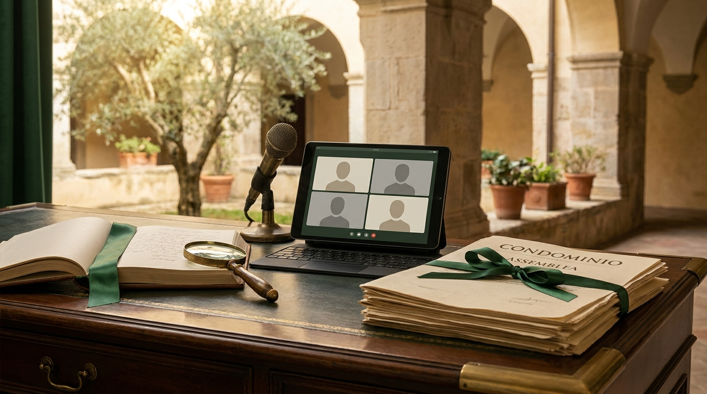

Registrare l'assemblea di condominio in videoconferenza: quando è lecito
Le assemblee di condominio in videoconferenza sono ormai prassi diffusa. Ma il file audio-video che le immortala può essere conservato? Il Garante per la protezione dei dati personali, con le indicazioni del 2025, ha posto paletti precisi: registrazione lecita solo con autorizzazione dell'assemblea e cancellazione immediata dopo il verbale. Vediamo cosa cambia per amministratori e condòmini.

Il quadro normativo
L'assemblea in videoconferenza è oggi pienamente legittima. Il riferimento è l'art. 66, ultimo comma, delle disposizioni di attuazione del Codice civile, che ammette lo svolgimento dell'assemblea anche in modalità telematica quando previsto dal regolamento o consentito dalla maggioranza dei partecipanti.
Il tema della registrazione è invece governato dalla normativa sulla protezione dei dati personali (Regolamento UE 2016/679 - GDPR e Codice privacy, d.lgs. 196/2003). Su questo terreno è intervenuto il Garante, con le indicazioni rese nel 2025, per chiarire entro quali limiti l'amministratore o un condòmino possano registrare la seduta.
Il punto è che voce, immagine e interventi dei partecipanti sono dati personali. La registrazione di una riunione equivale quindi a un trattamento di dati, che deve avere una base giuridica e rispettare i principi di minimizzazione e limitazione della conservazione (art. 5 GDPR). In altri termini: non si possono raccogliere e tenere dati oltre quanto serve allo scopo.
Cosa ha chiarito il Garante
La registrazione dell'assemblea telematica è ammessa, ma a due condizioni cumulative.
Prima condizione: l'autorizzazione dell'assemblea. Non basta la volontà dell'amministratore. Occorre il consenso dei partecipanti, espresso in seno alla riunione stessa. La registrazione "di nascosto" o decisa unilateralmente è illegittima e può esporre a responsabilità.
Seconda condizione: la cancellazione immediata. Il file ha una sola funzione: agevolare la redazione del verbale, che resta l'unico documento ufficiale dell'assemblea. Una volta redatto il verbale, la registrazione va eliminata. Conservarla "per sicurezza" o per eventuali future contestazioni non è una finalità legittima e contrasta con il principio di limitazione della conservazione.
La logica è chiara: lo scopo è verbalizzare in modo fedele, non costruire un archivio audio-video delle posizioni espresse da ciascun condòmino, con i rischi che ne deriverebbero in termini di tracciamento e uso improprio.
Implicazioni pratiche
Per l'amministratore, la registrazione non è uno strumento di tutela personale da custodire nel cassetto. È un ausilio temporaneo. Conservarla oltre la redazione del verbale significa effettuare un trattamento privo di base giuridica, con possibile responsabilità verso i condòmini e davanti al Garante.
Per i condòmini, vale il diritto di sapere se la seduta viene registrata e di esprimersi sul punto. Una registrazione non autorizzata può essere contestata e, nei casi più gravi, segnalata all'Autorità.
Un equivoco frequente riguarda il valore probatorio: la registrazione non sostituisce il verbale. È quest'ultimo, sottoscritto da presidente e segretario, a fare prova delle decisioni assunte. Affidarsi al file audio-video per ricostruire "chi ha detto cosa" è quindi una strada giuridicamente fragile, oltre che a rischio sotto il profilo privacy.
Resta poi il tema della piattaforma utilizzata. Se lo strumento di videoconferenza registra in automatico, occorre disattivare la funzione o gestirla nel rispetto delle stesse regole: autorizzazione e cancellazione tempestiva.
Cosa fare in concreto
- Mettete ai voti la registrazione all'apertura della seduta: annotate a verbale l'autorizzazione o il diniego dei partecipanti.
- Limitate l'uso del file alla sola redazione del verbale, senza condivisioni con terzi né caricamenti su archivi cloud non controllati.
- Cancellate la registrazione non appena il verbale è stato redatto e approvato, documentando l'avvenuta eliminazione.
- Verificate le impostazioni della piattaforma di videoconferenza, disattivando eventuali registrazioni automatiche non autorizzate.
- Aggiornate il regolamento condominiale, se opportuno, disciplinando in modo espresso le modalità delle assemblee telematiche e il trattamento dei relativi dati.
Consigliamo di affrontare il tema in modo trasparente sin dalla convocazione, indicando se e come la seduta sarà gestita in videoconferenza. La chiarezza preventiva riduce il rischio di contestazioni e tutela tanto l'amministratore quanto i condòmini.
Il bilanciamento individuato dal Garante è equilibrato: la tecnologia agevola la partecipazione, ma non può trasformarsi in uno strumento di archiviazione indiscriminata delle posizioni espresse in assemblea.
Disclaimer
Contributo informativo a cura di Tamburro & Partners - Avv. Giuseppe Tamburro. Non costituisce parere legale.
Ogni condominio ha una storia a sé.
Se gestisci un'amministrazione e vuoi un confronto su una specifica questione condominiale, scrivi allo studio. Ti rispondiamo entro un giorno lavorativo.